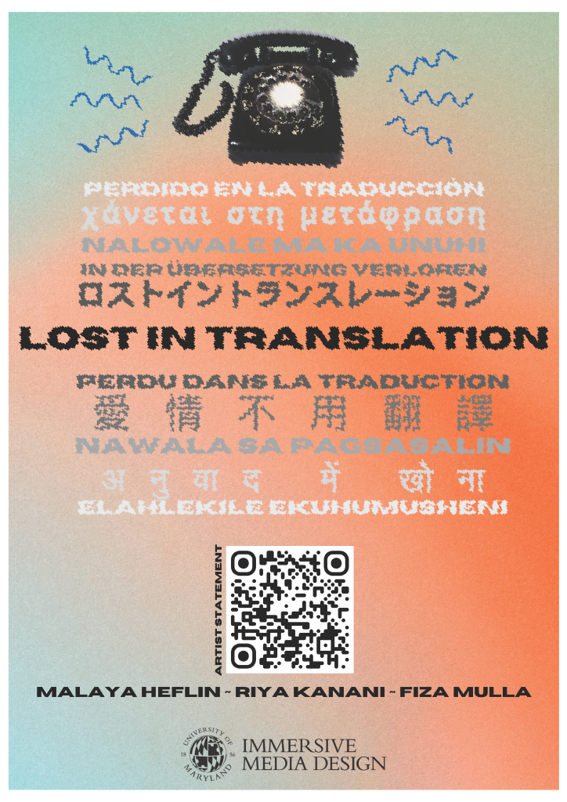

"Lost in Translation" is a physical art installation where participants will enter a phonebooth and must follow the distorted verbal instructions of someone in trouble and past participants to complete a seemingly simple task. We hope to relay the frustration that miscommunication can bring, particularly in relation to immigration and the experiences of those from foreign countries. "Lost in Translation" will be publicly exhibted at the Brendan Iribe Center on May 3rd, 2024, at the Immersive Media Design Spring Showcase.
See artist statement, behind the scenes, etc. at at https://malayaheflin.github.io/LostInTransWeb/
See code at our Github repo at https://github.com/riyakanani/LostInTranslation
